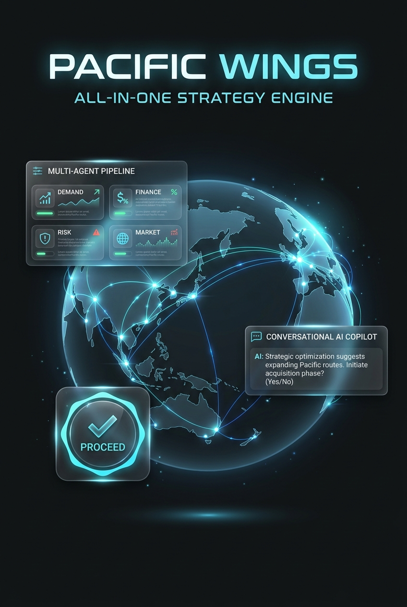
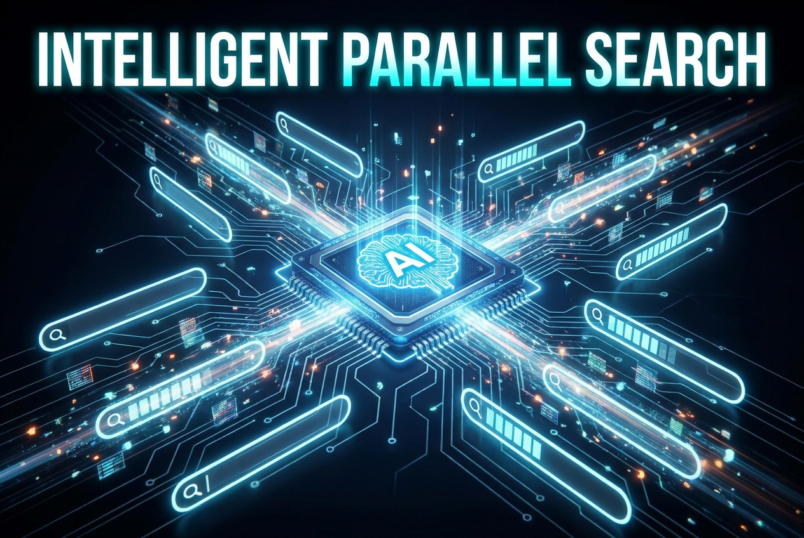
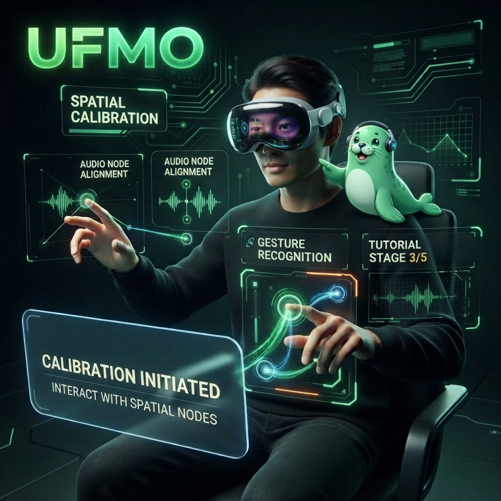
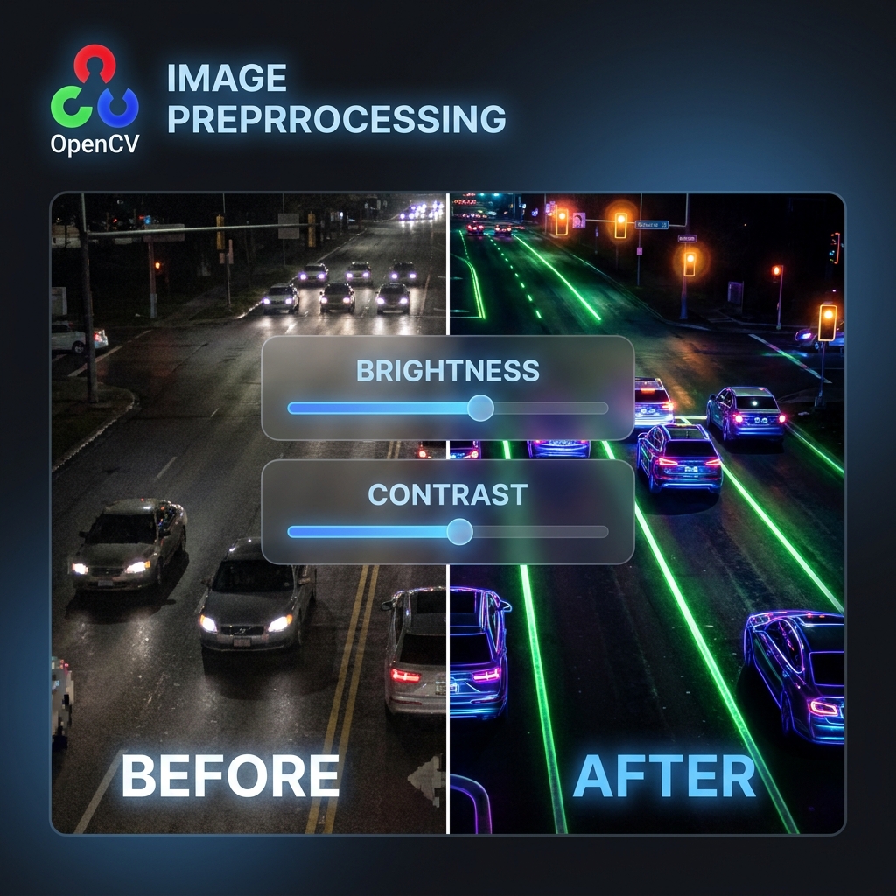
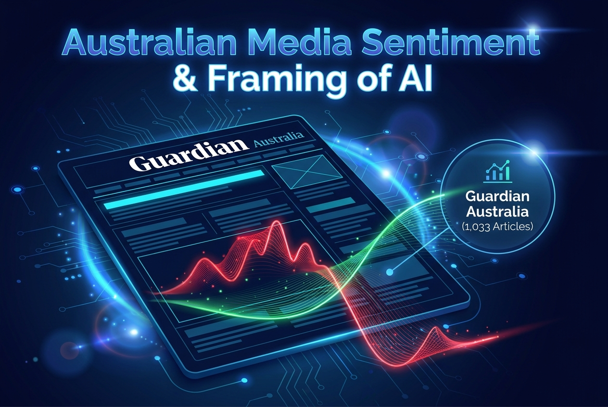

Hello I'm
Tien Dung Vu
AI Engineer / Analyst
I design and build intelligent systems from the ground up. I train machine learning models that learn from data, build computer vision pipelines that interpret the visual world, engineer NLP systems that understand language at scale, and architect LLM agents that reason, plan, and act autonomously. From raw data to deployed product, I own the full stack of intelligence.
View My Work Get In Touch
Engineering AI systems end-to-end
A driven AI Engineer and Analyst who operates at the full depth of intelligent systems. My expertise spans machine learning that extracts signal from noise, NLP systems that make sense of human language, computer vision pipelines that interpret the visual world, and LLM agents that reason and act with autonomy, all trained, evaluated, and deployed to AWS behind FastAPI endpoints. Backed by a strong foundation in Python, SQL, and AI system design, plus the analytics side of the job (ETL/ELT into PostgreSQL, A/B and hypothesis testing, Power BI reporting), I build for production, not just proof of concept.
- Machine learning, NLP, and computer vision in production
- LLM agents and agentic pipelines that reason and act
- Based in Epping, NSW and open to full-time AI/ML roles across Australia
What I bring to the table
A comprehensive toolkit spanning the full intelligence stack. From low-level model training to production-ready deployment, I bring the depth to own any layer of an AI system.
Machine Learning & AI
Text classification, sentiment analysis, topic modelling, and image classification using CNNs, BERT, TF-IDF, and Naive Bayes, trained, tuned, and evaluated end to end for real-world accuracy.
LLM & Agentic Systems
Multi-agent LangGraph pipelines, RAG retrieval, prompt engineering, query generation, and structured result synthesis, plus production content automation built on Claude Code and n8n.
Computer Vision
CNN image classification pipelines with data augmentation, normalisation, and hyperparameter tuning, iterating on architectures across end-to-end training and evaluation.
NLP
Text preprocessing, word embeddings, sentiment frameworks, and topic modelling that make sense of human language at scale, from raw corpora through to deployable insight.
Data & Analytics
Power BI and Looker Studio dashboards consolidating GA4 and Search Console data, automated weekly stakeholder reporting, ETL/ELT pipelines into PostgreSQL, and A/B and hypothesis testing that turn raw metrics into decisions.
Software Engineering
API integration, backend development, containerisation, and GitHub Actions CI/CD with Python, FastAPI, Docker, REST APIs, and Git, shipping models as reliable, production-ready services.
5+
Major Projects
3
AI Internships
4
Automation Pipelines Shipped
15+
Technologies Used
Where I've worked
Hands-on AI engineering experience across marketing automation, computer vision, and machine learning, alongside customer-facing operations work.
-
AI-Driven Marketing Intern, Affinity Marketing Australia (May 2026 - Present)
Built 4 end-to-end content automation pipelines with Claude Code and n8n (SEO blog expander, video-to-content-pack, blog-to-social repurposing, ad copy refresh). Engineered a Looker Studio dashboard consolidating GA4 and Search Console data with automated weekly stakeholder summaries, developed a Google Ads copy generator producing 15+ Claude-generated variants plus an email subject-line A/B testing pipeline, delivered a full SEO baseline audit across the top 10 landing pages, managed client CRM workflows in HubSpot and Salesforce, and authored an AI automation playbook for team handover.
-
AI Engineer Intern, CMC Corporation Vietnam (Oct 2024 - Apr 2025)
Built an AI-driven employee onboarding system in a team of 5: ETL/ELT pipelines in Python and SQL loading 120,000+ HR records into PostgreSQL on daily incremental loads, classical ML models (scikit-learn, XGBoost) for attrition risk scoring and cohort clustering, time-series forecasting of onboarding volume, and a retrieval-augmented generation (RAG) assistant over 700 internal policy documents served from a FAISS vector index to 50 HR staff and new starters. Ran hypothesis testing and A/B tests on onboarding interventions, deployed the trained models to AWS behind 10 FastAPI endpoints containerised with Docker, and built Power BI dashboards on onboarding throughput and data quality.
-
AI Engineer Intern, FPT Vietnam (Sep 2023 - Feb 2024)
Designed and implemented a GitHub Actions CI/CD pipeline from scratch, triggered on pull requests and merges to main, running the test suites and linting on every change, then building and tagging Docker images, pushing them to a container registry, and deploying to the target environment under environment-specific secrets and gates. Applied supervised learning algorithms including Linear Regression, Logistic Regression, and Decision Trees on structured datasets, implemented K-Means clustering for unsupervised pattern discovery, developed NLP classification models using word embeddings, and conducted data analysis and visualisation in Google Colab.
-
Passenger Service Agent, OACIS, Sydney Airport (Oct 2025 - Present)
Delivering high-standard passenger assistance across Sydney Airport terminals: information desk support, passenger flow management through check-in, security, boarding, and arrivals, and collaboration with airline staff, security, and airport operations teams, building communication, conflict resolution, and stakeholder management skills across diverse passenger groups.
Awards and recognition
Academic honours from UTS and industry certifications in applied AI, earned alongside the work.
Bachelor of Artificial Intelligence, University of Technology Sydney
Graded High Distinction across the degree, covering machine learning, NLP, computer vision, and AI system design.
Dean's List 2024
Faculty of Engineering and Information Technology, UTS.
Dean's List 2025
Faculty of Engineering and Information Technology, UTS.
AI Fundamentals: Foundations for Understanding AI
Issued by IBM, July 2026.
AI Agent Builder
Issued by Make, July 2026.
Things I've built
From full-stack AI platforms to research agents and mobile apps. Hover over each project for the details, or find the code on GitHub.

Pacific Wings Airline Strategy Simulator
Full-stack airline strategy platform ingesting real BITRE, World Bank, and OurAirports data, surfaced across an 11-page Next.js dashboard.
Python, FastAPI, Next.js, XGBoost, LangGraph, Gemini AI, PostgreSQL, Docker
- XGBoost demand model (R²=0.952)
- Monte Carlo risk simulator + 5-agent copilot
- Conversational agent with 11 tools

Research LLM Agent (CLI)
CLI research agent with a 4-node LangGraph pipeline: GenerateQueries, WebSearch, Reflect, Synthesize.
Python, LangGraph, Gemini, SerpAPI, Docker
- Reflection loop re-searches coverage gaps
- Cited Markdown and JSON answers
- Layered errors, 5-scenario test suite

UFMO: Accessible Game
Apple Vision Pro game with UTS Human Augmentation Lab making gaming accessible to blind and visually impaired players.
Apple Vision Pro, Echolocation, Custom Gestures, Audio Parameterisation
- Led the audio customisation system
- ElevenLabs TTS voice guidance
- Echolocation and eye-tracking aim

Traffic Congestion Analysis
Turned Transport for NSW live traffic-camera imagery into congestion signals, built in a team of 6 at UTS.
Python, OpenCV, PyTorch, scikit-learn, REST APIs
- 192-image dataset from 194 live cameras
- CLAHE preprocessing, +19% brightness
- 4 detectors benchmarked with 95% CIs

Australian Media Sentiment & Framing of AI
Analysed 1,033 Guardian Australia articles (2017-2026) for UTS / The Sydney Morning Herald.
Python, VADER, RoBERTa, FinBERT, BERTopic, Guardian API
- Three-model sentiment framework
- Found headline-body negativity divergence
- 6 editorial recommendations to SMH
Get in touch with me
Open to full-time AI/ML roles across Australia. I'd love to chat about what we could build together.
Or call (+61) 466-599-354 · Epping, NSW, Australia · LinkedIn
©2026 Tien Dung Vu. Template by DesignToCodes.